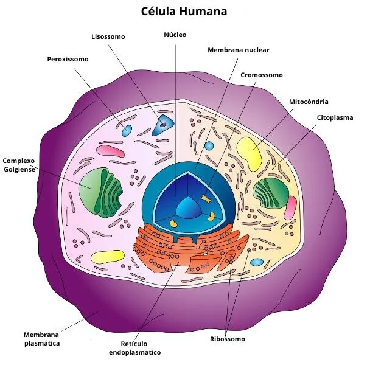
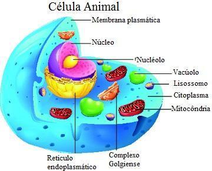

O Que Estuda A Citologia?
A Citologia é uma área da Biologia que estuda as células, as unidades fundamentais da vida. Ela é uma das disciplinas mais antigas da Biologia, sendo a primeira a estudar a estrutura e a função celular, e tem sido constantemente evoluída com o desenvolvimento de novas técnicas e tecnologias. A célula é a unidade básica da vida, sendo capaz de realizar todas as funções necessárias para a sobrevivência e reprodução de um organismo. Ela é formada por uma membrana plasmática, que delimita o seu conteúdo interno, e um citoplasma, onde estão as organelas responsáveis por funções específicas. O núcleo é o principal organelas da célula, que contém o material genético responsável pela síntese de proteínas. As células são classificadas em dois tipos: procarióticas e eucarióticas. As células procarióticas são mais simples e não possuem núcleo organizado, como as bactérias. Já as células eucarióticas possuem núcleo organizado e estão presentes em organismos mais complexos, como animais e plantas. A história da Citologia remonta a Robert Hooke, que em 1665 observou células mortas de cortiça ao microscópio óptico e cunhou o termo "célula". Desde então, a Citologia tem evoluído com o surgimento de novas técnicas de estudo celular, como a microscopia eletrônica de transmissão e a microscopia de fluorescência, que permitem a visualização das células em alta resolução e a observação de moléculas específicas dentro das células (Alberts et al., 2014). As técnicas de análise citológica são amplamente utilizadas em áreas como a medicina, para diagnóstico de doenças, e a biotecnologia, para a produção de medicamentos e produtos farmacêuticos. A análise citológica é uma ferramenta importante no diagnóstico de doenças, como o câncer, e pode ser realizada em amostras de tecidos, fluidos corporais e células isoladas. O exame citológico do colo do útero, por exemplo, é utilizado para detectar células anormais que podem indicar a presença de câncer (Lodish et al., 2016). A biotecnologia é outra área em que a Citologia tem um papel fundamental. A cultura de células é amplamente utilizada para produzir produtos farmacêuticos, como vacinas, anticorpos e proteínas recombinantes. As células podem ser modificadas geneticamente para produzir proteínas específicas, que são utilizadas na produção de medicamentos. Além disso, a engenharia tecidual é uma área em expansão, que utiliza células para produzir tecidos e órgãos artificiais (Alberts et al., 2014). ciclos de nutrientes, mudanças climáticas e outros problemas ambientais.
O Estudo Da Célula
O estudo da célula tem sido fundamental para a compreensão da vida e da evolução dos seres vivos. A teoria celular, que estabelece que todos os seres vivos são compostos por células, é um dos princípios fundamentais da Biologia. A partir do estudo das células, é possível entender como os organismos se desenvolvem e se adaptam ao ambiente. A evolução da vida está intimamente relacionada à evolução das células, e muitas das características dos seres vivos são derivadas das propriedades das células. Uma das áreas de estudo mais importantes da Citologia é a biologia molecular, que se dedica ao estudo das moléculas que compõem as células, como proteínas, ácidos nucléicos e lipídios. A biologia molecular tem sido uma das áreas mais dinâmicas da biologia nos últimos anos, com o surgimento de novas técnicas para análise de moléculas, como a espectrometria de massa e a cristalografia de raios X. A Citologia também tem sido fundamental para o desenvolvimento de novas terapias e tratamentos para doenças. A terapia celular, por exemplo, utiliza células do próprio paciente para tratar doenças, como câncer e doenças do sistema imunológico. As células são isoladas, modificadas geneticamente ou tratadas com medicamentos e reinseridas no paciente para que possam exercer a função terapêutica desejada (Lodish et al., 2016). Além disso, a Citologia tem sido usada para entender melhor a relação entre células e doenças. A análise de células cancerosas, por exemplo, tem levado a descobertas importantes sobre o funcionamento do câncer e tem sido fundamental para o desenvolvimento de novas terapias. A Citologia também é importante para o desenvolvimento de medicamentos, pois permite a análise de como as células respondem a diferentes drogas e pode ajudar a identificar novos alvos terapêuticos.
Figura 1. Citologia (ABBACURSOS, 2023)
Algumas Aplicações
Segundo o autor, uma das principais aplicações práticas da ecologia na conservação da biodiversidade é a identificação e proteção de espécies ameaçadas de extinção. A Lista Vermelha da União Internacional para a Conservação da Natureza (IUCN) é um importante instrumento para a avaliação do risco de extinção das espécies. Além disso, a ecologia pode ser utilizada para a restauração de ecossistemas degradados, através da identificação de espécies e processos ecológicos chave que devem ser recuperados para a recuperação do ecossistema. A gestão de recursos hídricos é um exemplo de aplicação prática da ecologia na gestão de recursos naturais. A ecologia pode ser utilizada para entender os processos hidrológicos em uma bacia hidrográfica e para identificar as áreas críticas em termos de degradação ambiental. Com base nesses dados, podem ser desenvolvidas estratégias para a conservação e recuperação das áreas degradadas, bem como para o manejo sustentável da água. Outra aplicação da ecologia na gestão de recursos naturais é a identificação de áreas prioritárias para a conservação da biodiversidade. A ecologia pode ser utilizada para mapear a distribuição de espécies e ecossistemas em uma região, identificando áreas de alta biodiversidade e áreas críticas para a conservação. Com base nessas informações, podem ser desenvolvidas estratégias para a criação de áreas protegidas e para o manejo sustentável dos recursos naturais. Além da conservação da biodiversidade e da gestão de recursos naturais, a ecologia também tem implicações na saúde humana. A ecologia da doença é uma área emergente da ecologia que estuda as interações entre os organismos que causam doenças e seus hospedeiros, bem como os fatores ambientais que afetam essas interações. Essa abordagem pode ajudar a entender a epidemiologia de doenças infecciosas, bem como a desenvolver estratégias para o controle e prevenção dessas doenças. A ecologia também pode ser utilizada para entender os impactos das mudanças climáticas nos ecossistemas e na biodiversidade. As mudanças climáticas têm levado a alterações na temperatura, na precipitação e nos regimes de ventos em todo o mundo. Essas mudanças têm afetado diretamente os ecossistemas, incluindo a distribuição das espécies e a produtividade dos ecossistemas. A ecologia pode ajudar a entender esses impactos e a desenvolver estratégias de adaptação para minimizar os efeitos negativos.
Figura 2. Célula Animal (BRAINLY, 2023)
Referências bibliográficas: